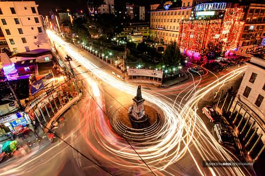

Basantapur Durbar Square
 Basantapur, also known as Kathmandu Durbar Square, is one of the most iconic and historically significant
heritage sites in Kathmandu. Located in the heart of the city, this UNESCO World Heritage Site is a
testament to Nepal's rich cultural and architectural heritage.
Basantapur, also known as Kathmandu Durbar Square, is one of the most iconic and historically significant
heritage sites in Kathmandu. Located in the heart of the city, this UNESCO World Heritage Site is a
testament to Nepal's rich cultural and architectural heritage.
Basantapur Durbar Square is home to several stunning palaces, temples, courtyards, and monuments. The
centerpiece of the square is the Hanuman Dhoka Palace, a complex that served as the royal residence of the
Malla and Shah dynasties.

The palace exhibits a blend of traditional Newari and Mughal architecture, with
intricately carved wooden windows, doors, and palatial courtyards.
The square is adorned with numerous temples, each dedicated to different Hindu deities. One of the most
famous temples is the Kumari Ghar, the residence of the Living Goddess, or Kumari. This revered young girl,
considered the incarnation of the goddess Taleju, is chosen through an elaborate selection process and
worshipped by both Hindus and Buddhists.
The Taleju Temple, situated within the Basantapur Durbar Square, is another architectural gem. Its towering
pagoda-style structure and exquisite woodcarvings depict various Hindu deities and mythological scenes.
Non-Hindus are not allowed inside the temple, but the external beauty is a sight to behold.


Despite suffering damage during the devastating earthquake in 2015, efforts have been made to restore and
preserve the heritage sites of Basantapur. The square continues to be a vibrant hub, bustling with locals,
tourists, and worshippers who gather to witness religious ceremonies, festivals, and cultural events.
A visit to Basantapur Durbar Square offers a journey back in time, allowing visitors to immerse themselves
in the rich history, art, and spirituality of Nepal. The exquisite architecture, the intricate detailing,
and the sense of reverence surrounding the heritage sites make it a must-visit destination for those seeking
to experience the cultural treasures of Kathmandu.